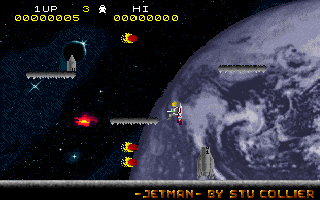
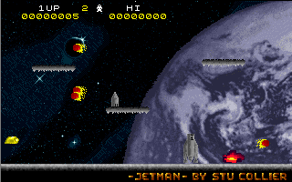
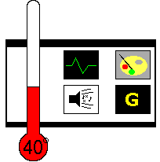

| Jetman Stuart Collier |
| When I were a wee lad, my favourite James Bond was Roger Moore. Sean Connery was some old bloke with no hair; who could believe that he was a secret agent? Roger, now there was a bloke with style. Okay, so he was getting on a bit, too, but at least he had hair. He had a better car, too, or so I thought at the time. He generally got better looking girls, too - Jane Seymour? Kim Basinger? Who did Sean Connery get? Ursula Andress and grandma from The Upper Hand. No contest there. Of course, these days I know better. Pierce Brosnan and Timothy Dalton were the best Bonds, with Sean Connery an unfeasibly close second. The only man worse than Roger Moore is George Lazenby. Even Bob Holness rates higher. | |

|
But one thing Roger Moore did get was a post-Star Wars sci-fi story - Moonraker. While a completely ludicrous film, even by Bond's usual standards, it did have some very cool bits, not least the final battle aboard the villain's space station. Marines in jetpacks charge out from their space shuttles, lasering their way through the enemy before boarding the station to rescue Bond and the girlie (whose name, unsurprisingly, escapes me). And so we come, via the most circuitous route possible, to Ultimate's Jetpac. Or rather, we come to Stuart Collier's remake of Ultimate's Jetpac - Jetman. |
|
Graphically, Jetman is only a marginal improvement over the original.
While the background image of Earth is marvellous, the ingame sprites
are recoloured versions of the original ones. Unfortunately, they don't
seem to be very well-coloured. Almost everything is grey. The ground is
grey. The platforms are grey. Jetman is mostly grey, but has at least
some coloured details. The rocket is grey. The fuel canisters are grey.
Bizarrely, Jetman's laser is grey. The aliens and explosions,
thankfully, are in different colours. The graphics have a tendency to be
bitty and ugly, which is quite unfortunate, but not a total disaster.
As far as gameplay goes, things are less forgivable. The first thing you'll notice when playing Jetman is that it's hard. Phenomenally hard, in fact. Those of you capable of playing Jetpac for hours at a time will suddenly find themselves in trouble getting off the first level. And then you'll realise that it's not hard, it's just unfair. |
 |
|  |
The collision detection is so grossly weighted in favour of the player
getting killed that the game soon becomes a farce. While it may look as
though an alien should have skimmed by reasonably close to you, what
will happen is that Jetman will die a fiery death. Again. This would not
be so bad if the same wide collision areas applied to the items you need
to pick up, but instead the reverse is the case. While in Jetpac you
could scoop up fuel canisters as they fell from the sky, in Jetman
you'll swoop by, fail to pick up the canister, double back, and get
killed by an alien (again).
It's hard to describe just how unrewarding this scenario is. There's also the slightly different behaviour of the aliens, which results in your almost certain death if you approach the edge of the screen. If the collision detection were not so horrendously flawed, the game would undoubtedly be a marvellous remake. As it stands, it's just a disappointment, especially given the obvious work that's gone into it. |
|  |
Graphics: 70° Recoloured originals, occasionally bitty Sound: 70° Nice drum-loop intro music, and nice effects Life Expectancy: 30° If you manage to play this for long periods of time, I'd suggest going for a mental check-up. Gameplay: 30° The collision detection does not work. Summary: I hate giving low marks, particularly to remakes. But Jetman is so crippled that there's no other option. It's a crying shame, especially after Mr Collier's earlier work, Burps (YS3 #6, 70 °). Nathan Cross |